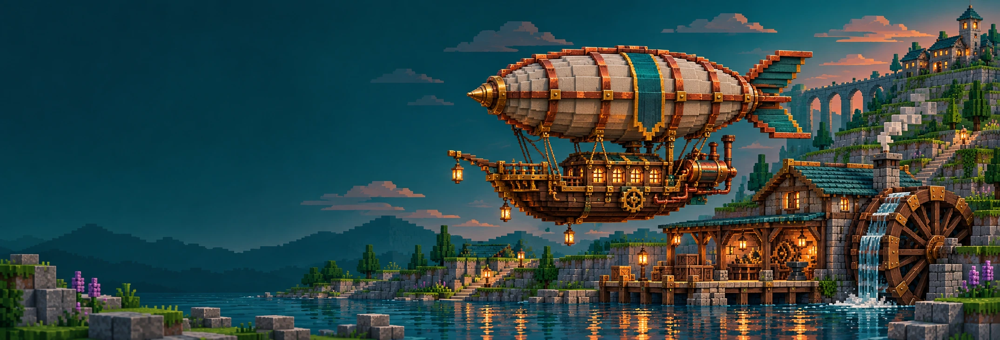
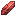

跳到正文
世界图鉴
8 个探索世界 · 2 个功能维度

探索世界
主世界
21 条矿床记录 · 10 项首领
下界
7 条矿床记录 · 4 项首领
末地
2 条矿床记录 · 3 项首领
天境
6 条矿床记录 · 3 项首领
暮色森林
9 条矿床记录 · 8 项首领

幽邃深渊
12 条矿床记录 · 1 项首领
深暗彼端
9 条矿床记录
永恒星光
9 条矿床记录 · 4 项首领
功能维度
ME 空间存储
青蛙胃袋